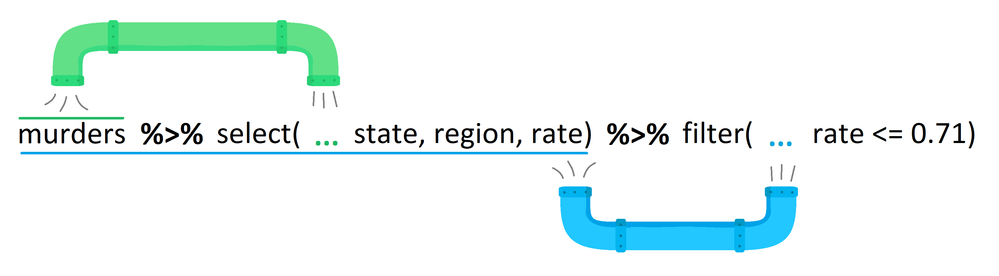

# download and install the tidyverse package(s)
# to run the line of code, remove the # in front of the line below and run this chunk
# install.packages("tidyverse")1.3: Introduction to the tidyverse
2-dimensional Data and the tidyverse
Learning Outcomes
- Students will be able to load packages.
- Students will be able to use some functions of the tidyverse: select, filter, the pipe, mutate, summarize, and group by.
- Students will compare and contrast base R and tidyverse methodology for subsetting data frames.
- Students will be able to use tidyverse functions to summarize real-world data.
The tidyverse: What is it?
Different programming languages have different syntax (language structure). The tidyverse is a package (more accurately, a set of packages) offered in R that all have similar goals and a unified syntax designed to work particularly well with 2-dimensional data.
Until now, all of the coding we have done is in the original R language, which is often called “base R.” The syntax in the tidyverse is often pretty different from base R. Both are useful, and many people often combine them, which is why we start with base R.
That said, we will be primarily using the tidyverse for the rest of the course.
Wait, what is a package??
Packages are one of the neatest things of working in an open-source environment like R! They contain bits of code (often in the form of functions) that can be reused, making them a core component of reproducible data science. Anyone can develop a package, and there are thousands of them doing all sorts of things.
You install a package once, but you load it with library() every time you start a new R session.
Explore the tidyverse
If you want to learn more about the tidyverse, head over to www.tidyverse.org and browse the site. Below is a brief summary of some of the packages that are particularly useful for this course.
tidyr: creating data that is consistent in form/shapedplyr: creating data that is clean, easily wrangled, and summarizedggplot2: publication-worthy plots using The Grammar of Graphicstibble: data frames but better!readr: fast and friendly ways to read data into Rstringr: easy manipulation of strings (character data)lubridate: easy manipulation of time and date values
Practice with the tidyverse
Download and Install
In most scenarios, you will need to download a package from the internet onto your computer before you can use it in RStudio. However, with Posit Cloud, this step has already been done for you!
For future reference, though:
- you usually only need to go through this process once until you update R
- we use the function
install.packages()to download the package
Load Packages into R
Any time we open R/RStudio and want to use functions from the tidyverse, we need to “load” the package. We use the library() function to do this.
When you run this code, you’ll see a message that says “Attaching packages” and “Conflicts.” Don’t panic!
- The first bit tells us that the core packages have been brought into our R session.
- The “conflict” part is a little more complicated but we don’t need to worry too much about it.
- If you’re curious, though, it is telling us that there are some functions in the
tidyversethat have the same names as functions that are automatically installed with R and that thetidyverseversions of those functions will be the ones that get used by default unless we specify otherwise.
- If you’re curious, though, it is telling us that there are some functions in the
# load the tidyverse (tell RStudio we want to use this package in this session)
library(tidyverse)Climate Data
To learn about the tidyverse syntax, we’re going to use a real data set on climate change from Berkeley, CA, USA. It outlines temperatures in major cities across the world since 1750.
# read in the data file
# `read_csv()` is part of the `tidyverse` and gives us nice options when reading in data
climate_df <- read_csv("data/global_temps.csv")Rows: 239177 Columns: 7
── Column specification ────────────────────────────────────────────────────────
Delimiter: ","
chr (4): City, Country, Latitude, Longitude
dbl (2): AverageTemperature, AverageTemperatureUncertainty
date (1): dt
ℹ Use `spec()` to retrieve the full column specification for this data.
ℹ Specify the column types or set `show_col_types = FALSE` to quiet this message.# Let's take a look at the climate data.
climate_df# A tibble: 239,177 × 7
dt AverageTemperature AverageTemperatureUnce…¹ City Country Latitude
<date> <dbl> <dbl> <chr> <chr> <chr>
1 1849-01-01 26.7 1.44 Abid… Côte D… 5.63N
2 1849-02-01 27.4 1.36 Abid… Côte D… 5.63N
3 1849-03-01 28.1 1.61 Abid… Côte D… 5.63N
4 1849-04-01 26.1 1.39 Abid… Côte D… 5.63N
5 1849-05-01 25.4 1.2 Abid… Côte D… 5.63N
6 1849-06-01 24.8 1.40 Abid… Côte D… 5.63N
7 1849-07-01 24.1 1.25 Abid… Côte D… 5.63N
8 1849-08-01 23.6 1.26 Abid… Côte D… 5.63N
9 1849-09-01 23.7 1.23 Abid… Côte D… 5.63N
10 1849-10-01 25.3 1.18 Abid… Côte D… 5.63N
# ℹ 239,167 more rows
# ℹ abbreviated name: ¹AverageTemperatureUncertainty
# ℹ 1 more variable: Longitude <chr>The tidyverse converts 2D data into something called a tibble! For our intents and purposes, it is basically the same as a data frame (and we’ll use the terms interchangeably).
As a quick reminder, columns represent variables and are vertical. Rows represent observations and are horizontal.

Let’s take a look at our tibble (AKA data frame).
# explore the data set
head(climate_df)# A tibble: 6 × 7
dt AverageTemperature AverageTemperatureUncer…¹ City Country Latitude
<date> <dbl> <dbl> <chr> <chr> <chr>
1 1849-01-01 26.7 1.44 Abid… Côte D… 5.63N
2 1849-02-01 27.4 1.36 Abid… Côte D… 5.63N
3 1849-03-01 28.1 1.61 Abid… Côte D… 5.63N
4 1849-04-01 26.1 1.39 Abid… Côte D… 5.63N
5 1849-05-01 25.4 1.2 Abid… Côte D… 5.63N
6 1849-06-01 24.8 1.40 Abid… Côte D… 5.63N
# ℹ abbreviated name: ¹AverageTemperatureUncertainty
# ℹ 1 more variable: Longitude <chr>str(climate_df)spc_tbl_ [239,177 × 7] (S3: spec_tbl_df/tbl_df/tbl/data.frame)
$ dt : Date[1:239177], format: "1849-01-01" "1849-02-01" ...
$ AverageTemperature : num [1:239177] 26.7 27.4 28.1 26.1 25.4 ...
$ AverageTemperatureUncertainty: num [1:239177] 1.44 1.36 1.61 1.39 1.2 ...
$ City : chr [1:239177] "Abidjan" "Abidjan" "Abidjan" "Abidjan" ...
$ Country : chr [1:239177] "Côte D'Ivoire" "Côte D'Ivoire" "Côte D'Ivoire" "Côte D'Ivoire" ...
$ Latitude : chr [1:239177] "5.63N" "5.63N" "5.63N" "5.63N" ...
$ Longitude : chr [1:239177] "3.23W" "3.23W" "3.23W" "3.23W" ...
- attr(*, "spec")=
.. cols(
.. dt = col_date(format = ""),
.. AverageTemperature = col_double(),
.. AverageTemperatureUncertainty = col_double(),
.. City = col_character(),
.. Country = col_character(),
.. Latitude = col_character(),
.. Longitude = col_character()
.. )
- attr(*, "problems")=<pointer: 0x000002905f4fa1b0> select()ing Columns
Let’s use our first function, select(). Select allows us to pick out specific columns from our data. You can use names or their position in the data frame.
First, let’s remind ourselves how we would accomplish this in base R.
# column selection in base R
# climate_df$dt
climate_df[,1:2]# A tibble: 239,177 × 2
dt AverageTemperature
<date> <dbl>
1 1849-01-01 26.7
2 1849-02-01 27.4
3 1849-03-01 28.1
4 1849-04-01 26.1
5 1849-05-01 25.4
6 1849-06-01 24.8
7 1849-07-01 24.1
8 1849-08-01 23.6
9 1849-09-01 23.7
10 1849-10-01 25.3
# ℹ 239,167 more rowsThe select() function does the same thing but with more power and more readable syntax. The first argument in the function is the data frame. Any following arguments are the columns we want to select.
# first argument is the data frame, then the columns
select(climate_df, dt)# A tibble: 239,177 × 1
dt
<date>
1 1849-01-01
2 1849-02-01
3 1849-03-01
4 1849-04-01
5 1849-05-01
6 1849-06-01
7 1849-07-01
8 1849-08-01
9 1849-09-01
10 1849-10-01
# ℹ 239,167 more rows# multiple columns
select(climate_df, dt, City, Country)# A tibble: 239,177 × 3
dt City Country
<date> <chr> <chr>
1 1849-01-01 Abidjan Côte D'Ivoire
2 1849-02-01 Abidjan Côte D'Ivoire
3 1849-03-01 Abidjan Côte D'Ivoire
4 1849-04-01 Abidjan Côte D'Ivoire
5 1849-05-01 Abidjan Côte D'Ivoire
6 1849-06-01 Abidjan Côte D'Ivoire
7 1849-07-01 Abidjan Côte D'Ivoire
8 1849-08-01 Abidjan Côte D'Ivoire
9 1849-09-01 Abidjan Côte D'Ivoire
10 1849-10-01 Abidjan Côte D'Ivoire
# ℹ 239,167 more rowsselect(climate_df, dt:Country)# A tibble: 239,177 × 5
dt AverageTemperature AverageTemperatureUncertainty City Country
<date> <dbl> <dbl> <chr> <chr>
1 1849-01-01 26.7 1.44 Abidjan Côte D'I…
2 1849-02-01 27.4 1.36 Abidjan Côte D'I…
3 1849-03-01 28.1 1.61 Abidjan Côte D'I…
4 1849-04-01 26.1 1.39 Abidjan Côte D'I…
5 1849-05-01 25.4 1.2 Abidjan Côte D'I…
6 1849-06-01 24.8 1.40 Abidjan Côte D'I…
7 1849-07-01 24.1 1.25 Abidjan Côte D'I…
8 1849-08-01 23.6 1.26 Abidjan Côte D'I…
9 1849-09-01 23.7 1.23 Abidjan Côte D'I…
10 1849-10-01 25.3 1.18 Abidjan Côte D'I…
# ℹ 239,167 more rowsselect(climate_df, -City)# A tibble: 239,177 × 6
dt AverageTemperature AverageTemperatureUncertainty Country Latitude
<date> <dbl> <dbl> <chr> <chr>
1 1849-01-01 26.7 1.44 Côte D'… 5.63N
2 1849-02-01 27.4 1.36 Côte D'… 5.63N
3 1849-03-01 28.1 1.61 Côte D'… 5.63N
4 1849-04-01 26.1 1.39 Côte D'… 5.63N
5 1849-05-01 25.4 1.2 Côte D'… 5.63N
6 1849-06-01 24.8 1.40 Côte D'… 5.63N
7 1849-07-01 24.1 1.25 Côte D'… 5.63N
8 1849-08-01 23.6 1.26 Côte D'… 5.63N
9 1849-09-01 23.7 1.23 Côte D'… 5.63N
10 1849-10-01 25.3 1.18 Côte D'… 5.63N
# ℹ 239,167 more rows
# ℹ 1 more variable: Longitude <chr>Note that we haven’t put any column names in quotations. Using the tidyverse, we will rarely (if ever, in this class) put column names in quotation marks.
Let’s practice!
Write a line of code to select the following data from the climate_df: average temperature, latitude and longitude
# Write your code hereAnswer:
select(climate_df, AverageTemperature, Latitude, Longitude)# A tibble: 239,177 × 3
AverageTemperature Latitude Longitude
<dbl> <chr> <chr>
1 26.7 5.63N 3.23W
2 27.4 5.63N 3.23W
3 28.1 5.63N 3.23W
4 26.1 5.63N 3.23W
5 25.4 5.63N 3.23W
6 24.8 5.63N 3.23W
7 24.1 5.63N 3.23W
8 23.6 5.63N 3.23W
9 23.7 5.63N 3.23W
10 25.3 5.63N 3.23W
# ℹ 239,167 more rowsIt is important to remember that the computer interprets everything literally. We need to tell the function the exact names of the columns. R will interpret latitude and Latitude as different things; it doesn’t know that they are probably the same!
filter()ing Rows
filter() allows you filter rows by certain conditions. The code below is how we would do this in base R.
# base R
climate_df[climate_df$AverageTemperature > 25, ]# A tibble: 79,690 × 7
dt AverageTemperature AverageTemperatureUnce…¹ City Country Latitude
<date> <dbl> <dbl> <chr> <chr> <chr>
1 1849-01-01 26.7 1.44 Abid… Côte D… 5.63N
2 1849-02-01 27.4 1.36 Abid… Côte D… 5.63N
3 1849-03-01 28.1 1.61 Abid… Côte D… 5.63N
4 1849-04-01 26.1 1.39 Abid… Côte D… 5.63N
5 1849-05-01 25.4 1.2 Abid… Côte D… 5.63N
6 1849-10-01 25.3 1.18 Abid… Côte D… 5.63N
7 1849-11-01 26.3 1.51 Abid… Côte D… 5.63N
8 1849-12-01 25.4 1.84 Abid… Côte D… 5.63N
9 1850-01-01 25.8 1.94 Abid… Côte D… 5.63N
10 1850-02-01 27.9 1.43 Abid… Côte D… 5.63N
# ℹ 79,680 more rows
# ℹ abbreviated name: ¹AverageTemperatureUncertainty
# ℹ 1 more variable: Longitude <chr>The code above is a bit unwieldy. Filter feels more intuitive. We still need the double equal signs, though!
# filter
filter(climate_df, AverageTemperature > 25)# A tibble: 68,688 × 7
dt AverageTemperature AverageTemperatureUnce…¹ City Country Latitude
<date> <dbl> <dbl> <chr> <chr> <chr>
1 1849-01-01 26.7 1.44 Abid… Côte D… 5.63N
2 1849-02-01 27.4 1.36 Abid… Côte D… 5.63N
3 1849-03-01 28.1 1.61 Abid… Côte D… 5.63N
4 1849-04-01 26.1 1.39 Abid… Côte D… 5.63N
5 1849-05-01 25.4 1.2 Abid… Côte D… 5.63N
6 1849-10-01 25.3 1.18 Abid… Côte D… 5.63N
7 1849-11-01 26.3 1.51 Abid… Côte D… 5.63N
8 1849-12-01 25.4 1.84 Abid… Côte D… 5.63N
9 1850-01-01 25.8 1.94 Abid… Côte D… 5.63N
10 1850-02-01 27.9 1.43 Abid… Côte D… 5.63N
# ℹ 68,678 more rows
# ℹ abbreviated name: ¹AverageTemperatureUncertainty
# ℹ 1 more variable: Longitude <chr># easy to write multiple conditions and to chain stuff together
# only rows that meet both conditions; could also use & instead of ,
filter(climate_df, AverageTemperature > 25, Country == "United States") # A tibble: 61 × 7
dt AverageTemperature AverageTemperatureUnce…¹ City Country Latitude
<date> <dbl> <dbl> <chr> <chr> <chr>
1 1761-07-01 27.8 2.39 Chic… United… 42.59N
2 1868-07-01 25.1 0.699 Chic… United… 42.59N
3 1900-08-01 25.2 0.49 Chic… United… 42.59N
4 1921-07-01 25.6 0.264 Chic… United… 42.59N
5 1947-08-01 26.4 0.199 Chic… United… 42.59N
6 1955-08-01 25.3 0.153 Chic… United… 42.59N
7 1959-08-01 25.1 0.205 Chic… United… 42.59N
8 1988-08-01 25.4 0.305 Chic… United… 42.59N
9 1995-08-01 25.9 0.283 Chic… United… 42.59N
10 2012-07-01 25.9 0.516 Chic… United… 42.59N
# ℹ 51 more rows
# ℹ abbreviated name: ¹AverageTemperatureUncertainty
# ℹ 1 more variable: Longitude <chr># rows that meet one or the other condition; the | symbol means `or`
filter(climate_df, AverageTemperature > 25 | Country == "United States" ) # A tibble: 77,082 × 7
dt AverageTemperature AverageTemperatureUnce…¹ City Country Latitude
<date> <dbl> <dbl> <chr> <chr> <chr>
1 1849-01-01 26.7 1.44 Abid… Côte D… 5.63N
2 1849-02-01 27.4 1.36 Abid… Côte D… 5.63N
3 1849-03-01 28.1 1.61 Abid… Côte D… 5.63N
4 1849-04-01 26.1 1.39 Abid… Côte D… 5.63N
5 1849-05-01 25.4 1.2 Abid… Côte D… 5.63N
6 1849-10-01 25.3 1.18 Abid… Côte D… 5.63N
7 1849-11-01 26.3 1.51 Abid… Côte D… 5.63N
8 1849-12-01 25.4 1.84 Abid… Côte D… 5.63N
9 1850-01-01 25.8 1.94 Abid… Côte D… 5.63N
10 1850-02-01 27.9 1.43 Abid… Côte D… 5.63N
# ℹ 77,072 more rows
# ℹ abbreviated name: ¹AverageTemperatureUncertainty
# ℹ 1 more variable: Longitude <chr># pulls rows in which the Country column has either "United States" OR "Mexico"
filter(climate_df, Country == "United States" | Country == "Mexico") # A tibble: 10,600 × 7
dt AverageTemperature AverageTemperatureUnce…¹ City Country Latitude
<date> <dbl> <dbl> <chr> <chr> <chr>
1 1743-11-01 5.44 2.20 Chic… United… 42.59N
2 1743-12-01 NA NA Chic… United… 42.59N
3 1744-01-01 NA NA Chic… United… 42.59N
4 1744-02-01 NA NA Chic… United… 42.59N
5 1744-03-01 NA NA Chic… United… 42.59N
6 1744-04-01 8.77 2.36 Chic… United… 42.59N
7 1744-05-01 11.6 2.10 Chic… United… 42.59N
8 1744-06-01 18.0 1.99 Chic… United… 42.59N
9 1744-07-01 21.7 1.79 Chic… United… 42.59N
10 1744-08-01 NA NA Chic… United… 42.59N
# ℹ 10,590 more rows
# ℹ abbreviated name: ¹AverageTemperatureUncertainty
# ℹ 1 more variable: Longitude <chr># worth noting here that we haven't saved any of this. We need to write to a new object.
us_df <- filter(climate_df, AverageTemperature > 25)Let’s practice using select() and filter()
Work with the climate data we’ve been using in this lesson. Construct a small set of code that does the following:
- Slims down the full data frame to one that has the date, average temperatures, and the city names. Assign this to an object called
slim. - Filters the data for Paris with an average temperature less than 22.
- Name this new data frame “cold_paris”
# Write your code hereAnswer:
slim <- select(climate_df, dt, AverageTemperature, City)
filtered <- filter(slim, City == "Paris", AverageTemperature < 22)
cold_paris <- filteredInstructor Note: Students haven’t learned the pipe yet so the unpiped version is correct here.
The Pipe %>%
You can use the pipe operator to chain tidyverse functions together.
You can think of the pipe as automatically sending the output from the first line into the next line as the input. The output of the previous line of code (to the “left” of the pipe) becomes the first argument in the function to the right of the pipe.

This is helpful for a lot of reasons, including:
- removing the clutter of creating a lot of intermediate objects in your work space, which reduces the chance of errors caused by using the wrong input object
- makes things more human-readable (in addition to computer-readable)
The shortcut for typing a pipe is Ctrl + Shift + M (or Cmd + Shift + M on a Mac)
Instructor Note: Newer versions of RStudio (2022 and later) default this shortcut to the native pipe |> instead of %>%. Both work for everything in this course, but if students get |> when they expected %>%, go to Tools -> Global Options -> Code and check “Use native pipe operator”. Uncheck it to default back to %>%, or tell students that |> is fine to use. It’s worth deciding which one you want the class to use and making it consistent.
climate_df %>%
select(dt, City)# A tibble: 239,177 × 2
dt City
<date> <chr>
1 1849-01-01 Abidjan
2 1849-02-01 Abidjan
3 1849-03-01 Abidjan
4 1849-04-01 Abidjan
5 1849-05-01 Abidjan
6 1849-06-01 Abidjan
7 1849-07-01 Abidjan
8 1849-08-01 Abidjan
9 1849-09-01 Abidjan
10 1849-10-01 Abidjan
# ℹ 239,167 more rowscold_paris <- climate_df %>%
select(dt, AverageTemperature, City) %>%
filter(City == "Paris", AverageTemperature < 22)Let’s practice!
In small groups, use pipes to create a new data frame called warm_nigeria that includes the following:
- the columns AverageTemperature, City, Country
- only rows for the country Nigeria and temperatures that are greater than 30 degrees
# Write your code hereAnswer:
warm_nigeria <- climate_df %>%
select(AverageTemperature, City, Country) %>%
filter(Country == "Nigeria", AverageTemperature > 30)Instructor Note: A common mistake here is putting filter() before select() and then getting an error because the pipe tries to filter on Country after it has already been dropped. If students hit this, it’s a great moment to learn about the order of operations in a pipe chain.
Turning Data into Information with summarize()
Some of the best ways to understand data are through what we call summary statistics such as the mean (average), standard deviation, minimums, maximums, etc. Fortunately, the tidyverse has a handy-dandy function to make this easy to do with data frames.
The summarize() function creates a new data frame with columns and values we give it.
The first part of the argument in the summarize function (before the =) is the name of the new column we want to create. After the = is code that produces the values for that column.
summarize(new_column_name = summary_function(column_to_summarize))# first attempt at mean and sd of average temperature
climate_df %>%
summarise(mean_temp = mean(AverageTemperature),
sd_temp = sd(AverageTemperature))# A tibble: 1 × 2
mean_temp sd_temp
<dbl> <dbl>
1 NA NAWait a second! Those are some weird values!
NA is how R represents missing data. The problem is that even one NA in a column causes mean() and sd() to return NA by default. R won’t assume you want to ignore the missing values without being told to.
Fortunately, mean() and sd() and some other functions have an argument to remove the missing values: na.rm = TRUE
climate_df %>%
summarise(mean_temp = mean(AverageTemperature, na.rm = TRUE),
sd_temp = sd(AverageTemperature, na.rm = TRUE))# A tibble: 1 × 2
mean_temp sd_temp
<dbl> <dbl>
1 18.1 10.0Pay attention to where the na.rm = TRUE argument is placed. We are putting it inside the parentheses for the mean() and sd() function, not as an argument in the summarize() function.
Split, Apply, Combine with group_by()
One common way we analyze data is through something we call the “split, apply, combine” approach. This means that we:
- split data up into groups via some type of categorization
- apply some type of analysis to each group independently and
- combine the data back together
The group_by() function lets us do this. It is most often used in combination with summarize().
For example, we can use this method to calculate the mean temperatures of each country instead of the overall mean of the entire dataset. In order to do this, we create groups in the data based on the country.
climate_df %>%
group_by(Country) %>%
summarise(mean_temp = mean(AverageTemperature, na.rm = TRUE),
sd_temp = sd(AverageTemperature, na.rm = TRUE))# A tibble: 49 × 3
Country mean_temp sd_temp
<chr> <dbl> <dbl>
1 Afghanistan 14.3 8.65
2 Angola 23.7 1.98
3 Australia 15.2 3.70
4 Bangladesh 25.5 3.88
5 Brazil 22.8 2.95
6 Burma 26.7 1.87
7 Canada 5.11 10.7
8 Chile 5.69 4.75
9 China 11.8 11.4
10 Colombia 20.9 1.15
# ℹ 39 more rowsLet’s practice!
Practice using the combination of group_by() and summarize() to calculate the minimum (min()) and maximum (max()) average temperatures for each city. Save this data frame as city_min_max.
# Write your code hereAnswer:
city_min_max <- climate_df %>%
group_by(City) %>%
summarize(min_temp = min(AverageTemperature, na.rm = TRUE),
max_temp = max(AverageTemperature, na.rm = TRUE))Already accomplished this task? Try to figure out how you can keep the “Country” column in the final data frame. This is trickier than you might think!
climate_df %>%
group_by(Country, City) %>%
summarize(min_temp = min(AverageTemperature, na.rm = TRUE),
max_temp = max(AverageTemperature, na.rm = TRUE))`summarise()` has regrouped the output.
ℹ Summaries were computed grouped by Country and City.
ℹ Output is grouped by Country.
ℹ Use `summarise(.groups = "drop_last")` to silence this message.
ℹ Use `summarise(.by = c(Country, City))` for per-operation grouping
(`?dplyr::dplyr_by`) instead.# A tibble: 100 × 4
# Groups: Country [49]
Country City min_temp max_temp
<chr> <chr> <dbl> <dbl>
1 Afghanistan Kabul -2.08 27.6
2 Angola Luanda 18.7 27.2
3 Australia Melbourne 6.63 23.0
4 Australia Sydney 12.0 22.0
5 Bangladesh Dhaka 15.1 30.7
6 Brazil Belo Horizonte 15.9 25.2
7 Brazil Brasília 17.2 25.9
8 Brazil Fortaleza 24.3 30.0
9 Brazil Rio De Janeiro 18.5 28.8
10 Brazil Salvador 21.0 28.3
# ℹ 90 more rowsInstructor Note: The bonus challenge works because group_by() can take multiple columns. Students often try to add select(Country) somewhere in the pipe instead, which either drops columns they need or doesn’t work as expected.
Creating New Columns with mutate()
Sometimes our data frame doesn’t have our data points in exactly the format we want. For example, we might want our temperature data in Fahrenheit instead of Celsius.
The tidyverse has a function called mutate() that lets us create a new column. Often, we want to apply a function to the entire column or perform some type of calculation, such as converting temperature from Celsius to Fahrenheit.
Like the summarize() function, the first part of the argument in the mutate function (before the =) is the name of the new column we want to create (or, sometimes, the name of a column we want to overwrite).
mutate(new_column_name = code_producing_values_for_the_new_column)To help us out, here is the equation for converting: Fahrenheit = Celsius * (9/5) + 32
# create a new column for temps in Fahrenheit
climate_df %>%
select(dt, AverageTemperature) %>%
mutate(AverageTemperature_F = AverageTemperature * (9/5) + 32)# A tibble: 239,177 × 3
dt AverageTemperature AverageTemperature_F
<date> <dbl> <dbl>
1 1849-01-01 26.7 80.1
2 1849-02-01 27.4 81.4
3 1849-03-01 28.1 82.6
4 1849-04-01 26.1 79.1
5 1849-05-01 25.4 77.8
6 1849-06-01 24.8 76.7
7 1849-07-01 24.1 75.3
8 1849-08-01 23.6 74.4
9 1849-09-01 23.7 74.6
10 1849-10-01 25.3 77.5
# ℹ 239,167 more rowsLet’s Practice
Write some code that uses the round() function to create a new column of average temperatures (Celsius) rounded to one decimal place.
# Write your code hereAnswer:
climate_df %>%
mutate(AverageTemperatureRound = round(AverageTemperature, digits = 1))# A tibble: 239,177 × 8
dt AverageTemperature AverageTemperatureUnce…¹ City Country Latitude
<date> <dbl> <dbl> <chr> <chr> <chr>
1 1849-01-01 26.7 1.44 Abid… Côte D… 5.63N
2 1849-02-01 27.4 1.36 Abid… Côte D… 5.63N
3 1849-03-01 28.1 1.61 Abid… Côte D… 5.63N
4 1849-04-01 26.1 1.39 Abid… Côte D… 5.63N
5 1849-05-01 25.4 1.2 Abid… Côte D… 5.63N
6 1849-06-01 24.8 1.40 Abid… Côte D… 5.63N
7 1849-07-01 24.1 1.25 Abid… Côte D… 5.63N
8 1849-08-01 23.6 1.26 Abid… Côte D… 5.63N
9 1849-09-01 23.7 1.23 Abid… Côte D… 5.63N
10 1849-10-01 25.3 1.18 Abid… Côte D… 5.63N
# ℹ 239,167 more rows
# ℹ abbreviated name: ¹AverageTemperatureUncertainty
# ℹ 2 more variables: Longitude <chr>, AverageTemperatureRound <dbl>Instructor Note: Students may try round(AverageTemperature, 1) without the digits = argument name, that also works.
If we set the “new” column name in the mutate() function as the same name of a column that already exists, the code will replace that column with the new values.